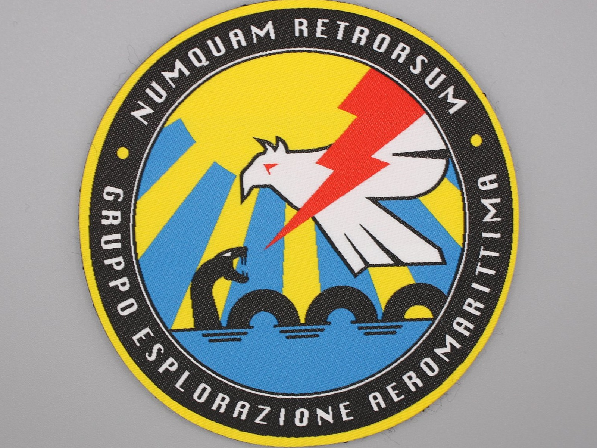
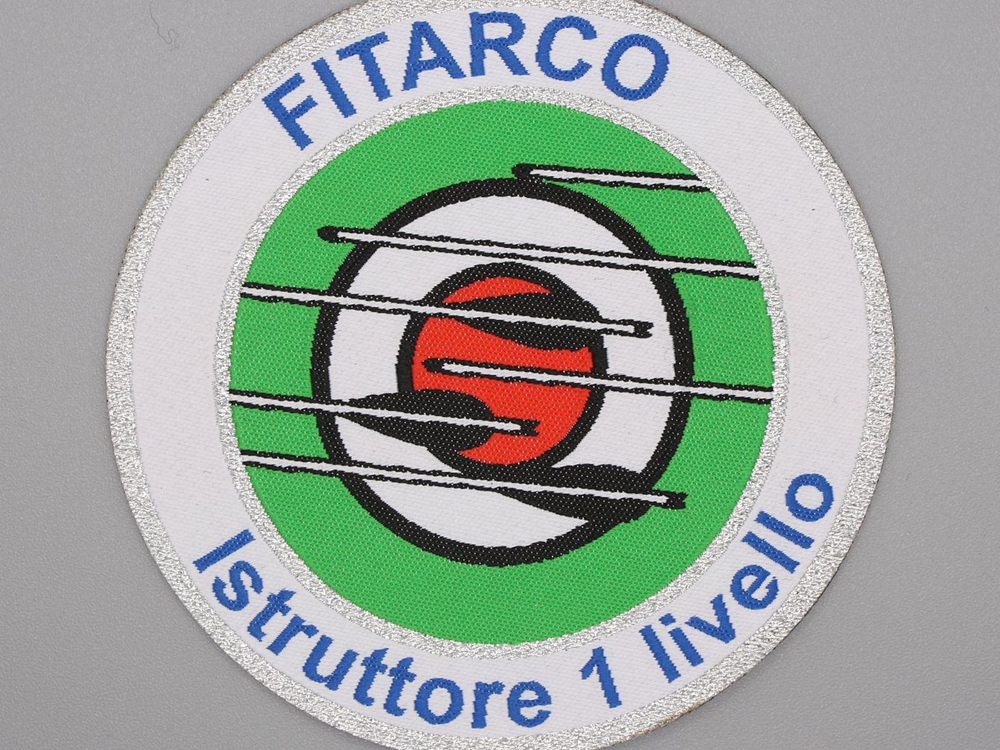
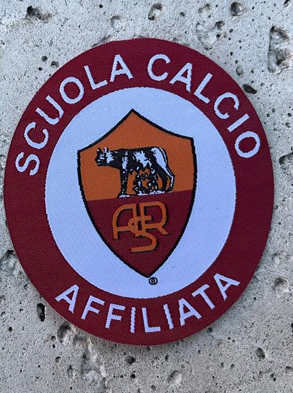
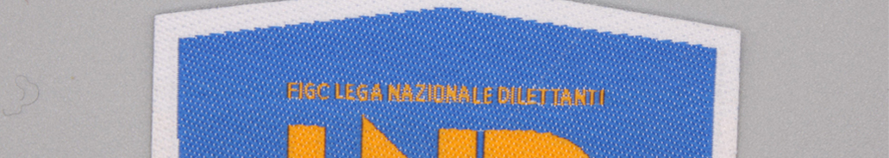
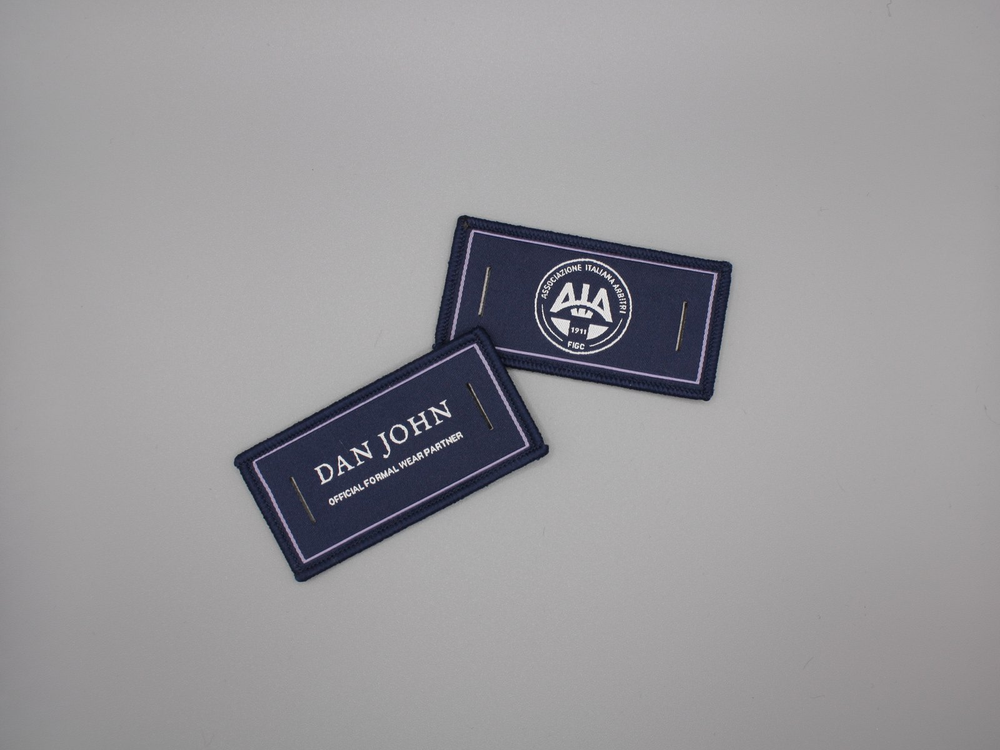
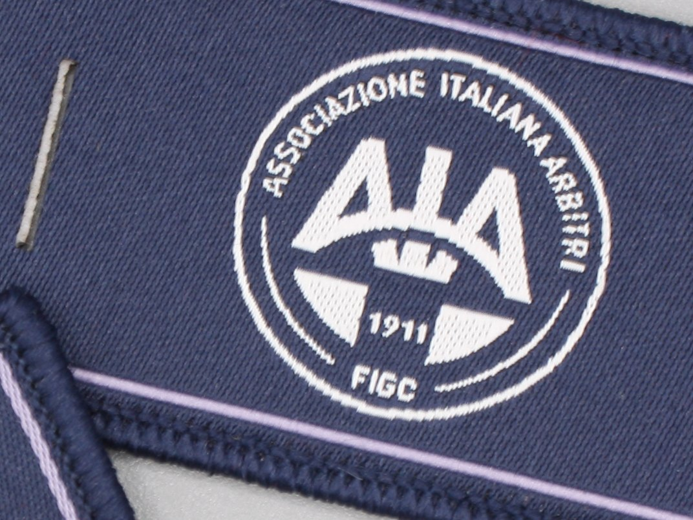

Patch Woven HD personalizzate
Tessitura ad alta definizione indicata per loghi con dettagli fini, linee sottili e testi che richiedono maggiore precisione rispetto al ricamo tradizionale, mantenendo uno spessore ridotto. "HD" è la denominazione con cui identifichiamo questa lavorazione: descrive la resa del dettaglio, non uno standard tecnico certificato.

Caratteristiche tecniche
- TessituraFilo fitto ad alta definizione
- SpessoreSottile, effetto quasi piatto
- DettaglioFine, adatto a testi piccoli e linee sottili
- RetroCucito, velcro o termosaldabile (previa verifica tecnica)
- Quantità minimaValutata in base al progetto
Quando scegliere il Woven HD
Consigliata per loghi con font piccoli, molti colori o dettagli grafici fini, tipici di brand moda, sportswear e prodotti tecnici. Se cerchi il rilievo e la matericità del filo, la patch ricamata resta la scelta più adatta; per grafiche fotografiche e piccole tirature valuta la patch sublimatica.
Il retro termosaldabile è disponibile previa verifica tecnica del progetto: la resa dell'applicazione a caldo dipende dal tessuto del capo e dalle condizioni di utilizzo. Approfondisci nella pagina patch termosaldabili.
La definizione che fa la differenza
Tessitura ad alta definizione, testi piccoli leggibili e una finitura premium: ecco alcuni progetti reali realizzati per aziende, federazioni e associazioni.




Patch woven premium con due lati rifiniti
Una soluzione di pregio per progetti in cui entrambi i lati della patch rimangono visibili. Scritte fini, bordi puliti e finitura professionale su entrambe le facce.


Vuoi confrontare questa lavorazione con le altre prima di decidere? Leggi la guida Come scegliere la patch giusta. Per i termini tecnici usati in questa pagina, consulta il glossario o l'indice completo delle guide.
Il tuo logo ha dettagli fini o piccoli?
Inviaci il file grafico: verifichiamo se il Woven HD è la lavorazione più adatta.
Richiedi preventivo